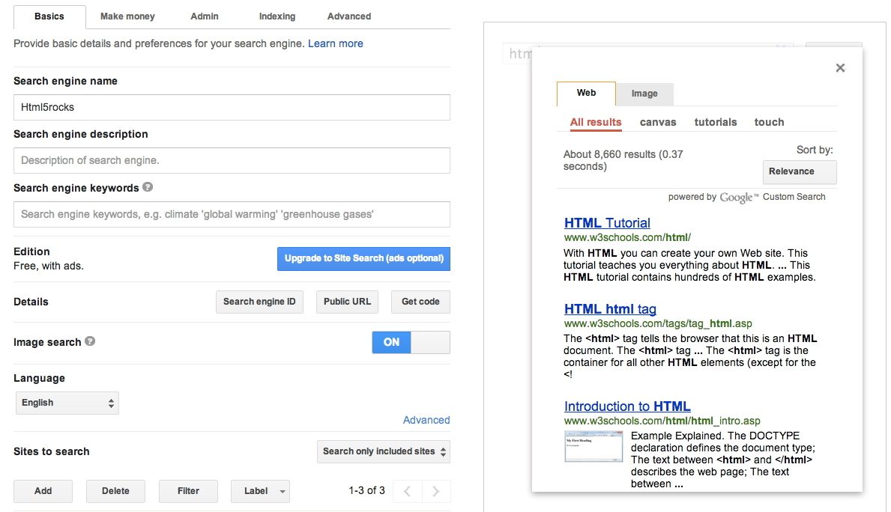
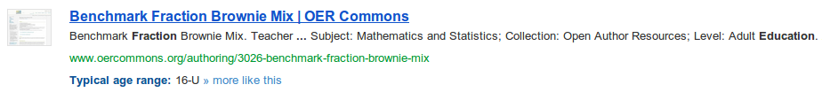
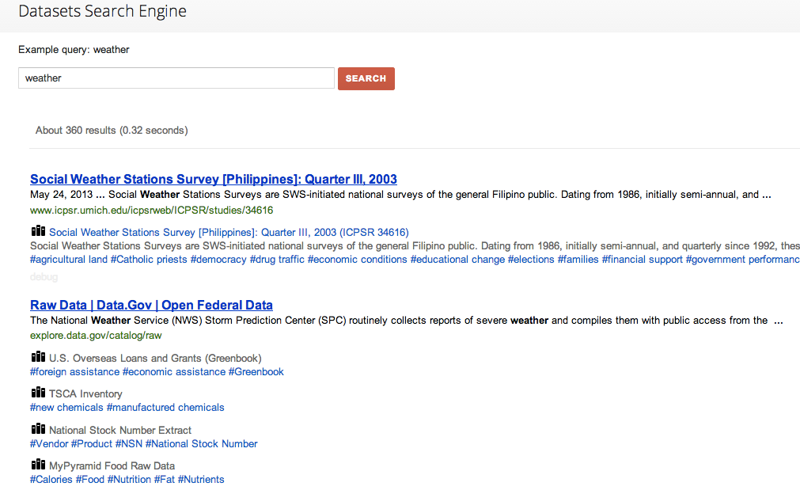

Ewa Gasperowicz
Developer Relations, Knowledge (Search)
- Google Custom Search
- Schema.org
- Knowledge Graph
What is available
- What is Custom Search
- What is Structured Data and semantic markup
- How to use it in Custom Search
What is Google Custom Search
What is available
Available editions
- Custom Search Engine (basic edition)
- Google Site Search (business edition)
Available APIs
- Custom Search Widget
- CSE/GSS JSON API
- GSS XML API - Available in Business edition only.
Making a basic engine is easy
Search is dramatically changing right before our eyes
Publishing and sharing structured data
Using structured data in Custom Search
Open ecosystem
With Schema.org

Test structured data
Use structured data in your engine
- Refinements
- Search terms
- Custom result snippets
Use structured data in your engine
Refinements
Search terms
Custom snippets
<gcse:search addOverride="MyOverrideName_" ></gcse:search>
<div id="MyOverrideName_webResult" >
<a data-body="html(title)"></a>
<a data-body="html(content)"></a>
<a data-body="visibleUrl"></a>
<span data-body="richSnippet.creativework.typicalagerange"></span>
</div>

Example: Datasets search engine
Read more
- developers.google.com/custom-search - developer documentation
- schema.org - everything about the standard schema.org
- Still have questions? #google-custom-search at StackOverflow
<Thanks!>